Boston Housing
Introducción
Elegí el dataset de "Boston Housing" ya que es un conjunto de datos muy conocido en el campo del aprendizaje automático y la estadística, utilizado principalmente para problemas de regresión. Este conjunto de datos fue recopilado por el Servicio de Censos de los Estados Unidos y contiene información sobre diversos factores socioeconómicos y características de viviendas en la ciudad de Boston y sus alrededores. El objetivo principal al trabajar con este dataset es predecir el valor medio de las viviendas en función de 13 variables predictoras, que incluyen características tanto del entorno como de la vivienda misma.
Herramienta
RapidMiner es una plataforma integral de análisis de datos y minería de datos que permite a los usuarios realizar todo el proceso de ciencia de datos, desde la limpieza y preparación de los datos, hasta la creación, validación y despliegue de modelos predictivos. Está diseñada para ser intuitiva y fácil de usar, incluso para personas con poca experiencia en programación, gracias a su interfaz gráfica basada en "drag-and-drop" que permite crear flujos de trabajo de análisis.
Dataset
Propósito
El proposito de utilizar este dataset es lograr predecir la media de los valores de las casas en diferentes zonas de Boston.
Cantidad de datos
- Registros: 506
- Atributos: 13 características + 1 variable objetivo
Atributos del dataset
- CRIM: Tasa de criminalidad per cápita.
- ZN: Proporción de terreno residencial zonificado para lotes grandes.
- INDUS: Proporción de acres comerciales no minoristas por ciudad.
- CHAS: Variable binaria que indica si la propiedad está cerca del río Charles (1 si está cerca, 0 si no).
- NOX: Concentración de óxidos de nitrógeno (contaminación).
- RM: Promedio de habitaciones por vivienda.
- AGE: Proporción de viviendas ocupadas construidas antes de 1940.
- DIS: Distancia ponderada a cinco centros de empleo en Boston.
- RAD: Índice de accesibilidad a carreteras radiales.
- TAX: Tasa de impuestos a la propiedad.
- PTRATIO: Ratio de estudiantes por profesor en cada localidad.
- B: Proporción de personas de raza negra en la población.
- LSTAT: Porcentaje de la población de bajo estatus socioeconómico.
- MEDV: Valor medio de las viviendas (en miles de dólares), que es la variable objetivo.
Predictor "B"
Es muy interesante uno de los atributos del dataset, el predictor "B" el cual determina la proporción de personas de raza negra en la población
No es éticamente agregar este atributo a este dataset. Además no debería ser adecuado ni relevante para el modelo.
Por otra parte, incluir "B" en el modelo sugiere que la raza de los habitantes tiene una relación directa con el valor de las viviendas, lo que podría ser interpretado como una justificación de las desigualdades sociales.
En los años 70, cuando se recopiló este dataset, era común asociar la composición racial con el valor de las viviendas. Hoy en día, estas prácticas son ampliamente consideradas no éticas en estudios y aplicaciones de Machine Learning.
Tipos de datos en RapidMiner
Verificamos que los tipos de datos de las columnas estén correctamente definidos (por ejemplo, valores numéricos como real y categóricos como nominal)
 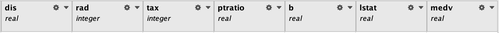
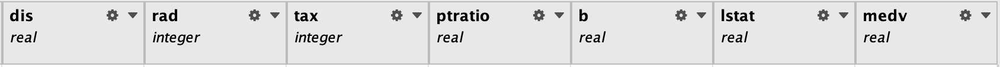
Limitaciónes o aspectos a tener en cuenta del dataset
Hay que tener en cuenta que los datos de este dataset provienen del año 1970 aproximadamente, por esto mismo, los valores de las casas están por debajo de los precios actuales.
Algunas de las columnas o variables del dataset, han cambiado en la actualidad, por ejemplo el "TAX" o "CRIM" pueden haber cambiado a lo largo de los años.
Por otra parte, no se tiene en cuenta alguno de los servicios importantes de la actualidad, como por ejemplo, empresas grandes que ofrezcan sus productos o servicios cerca de los establecimientos.
Modelo de machine learning
El modelo de regresión lineal simple es uno de los modelos mas sencillos para estos casos, ya que solo tenemos una variable objetivo MEDV la cual es continua.
Permite interpretar cómo cada predictor afecta al precio de las casas
Por ejemplo, si el coeficiente de RM es 4, significa que agregar una habitación aumenta el valor de la casa en $4,000, en promedio.
Es sencillo y rápido de implementar, incluso para datasets grandes como Boston Housing.
¿Porqué no utilizar otros modelos?
Naive Bayes
Naive Bayes es un modelo probabilístico basado en el Teorema de Bayes que se utiliza principalmente para problemas de clasificación y con datos categoricos o discretos.
¿Porqué no es ideal para este datset?
En este caso, la variable objetivo es continua y Naive Bayes no está diseñado para regresión de manera directa.
Para que este problema sea "ideal" para Naive Bayes, la variable objetivo debería ser categórica, por ejemplo, dividir las opciones en "Cara", "Media" y "Barata".
Por otra parte, Naive Bayes utiliza distribuciones específicas para cada variable (por ejemplo, Gaussianas para datos continuos). Si las distribuciones de los datos no se ajustan bien a estas suposiciones, el modelo puede fallar.
Visualización de relaciones
Se pueden visualizar las relaciones de las variables independientes y la variable objetivo, por ejemplo:
CRIM/MEDV
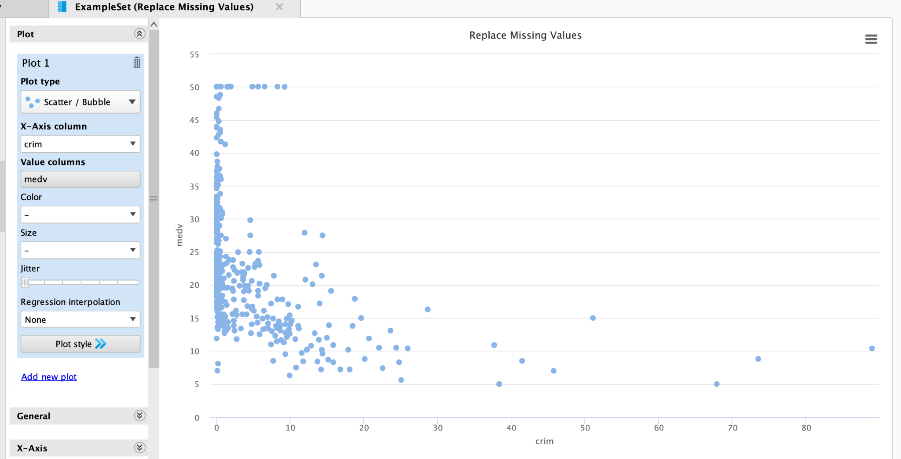En este caso se puede visualizar una tendencia negativa entre la media y el índice de criminalidad en la zona, si bien los valores se encuentran dispersos, mientras más criminalidad hay, menor es el valor de la casa.
RM/MEDV
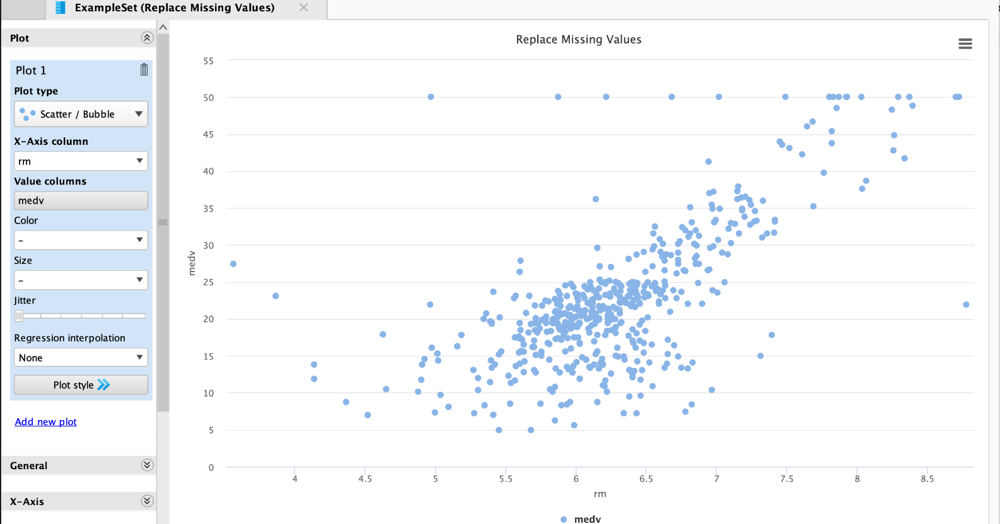En este caso se puede ver que la relación positiva entre el promedio de habitaciones por vivienda y la media. Esto significa, que en promedio, si la casa tiene más habitaciones, tiende a ser más cara.
LSTAT/MEDV
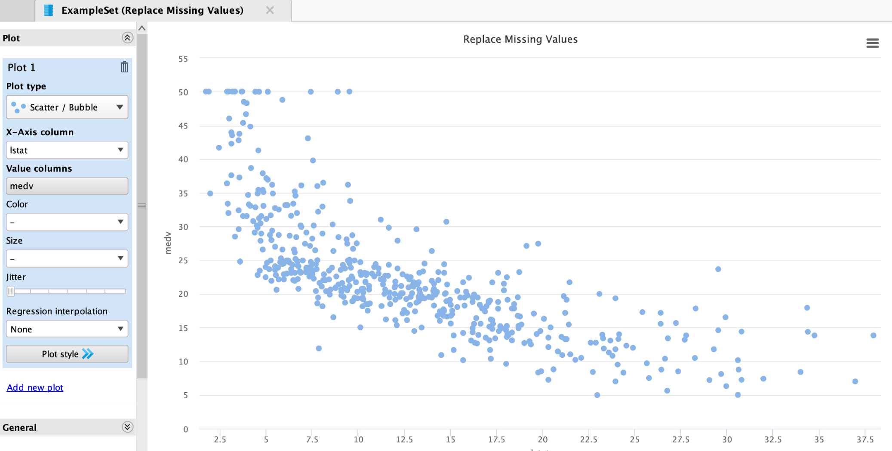En este caso podemos ver como hay una relación negativa entre el porcentaje de la población de bajo estatus socioeconómico y el precio de las casas
Mientras más alto es el porcentaje de la población de bajo estatus, más bajo es el valor de la casa
Correlación entre los atributos
Utilizando el operador "Correlation Matrix" podemos visualizar la correlación entre los atributos.
Con este operador podemos visualizar la matrix de correlacón, la cual nos muestra las diferentes relaciones entre los atributos.
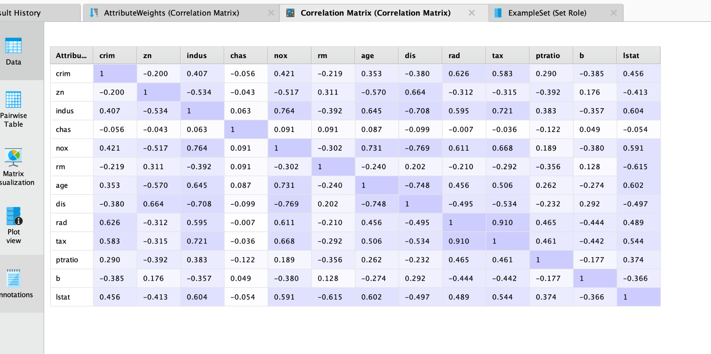También podemos ver los pesos de cada atributo con la salida del operador "Attributes Weights"
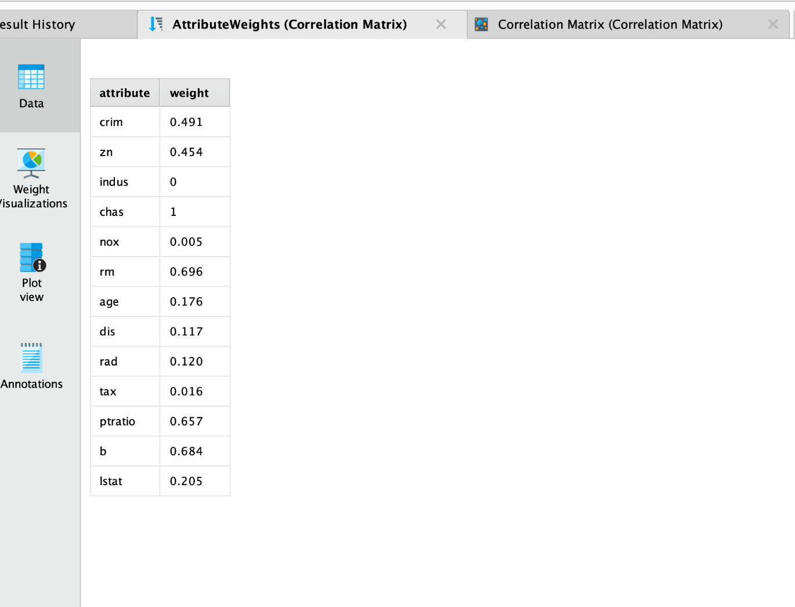Como podes ver, cada atributo tiene diferente peso en nuestra matrix, por ejemplo, "CHAS" es el atributo que tiene una correlación positiva fuerte (ambas variables aumentan juntas, CHAS y MEDV). Por otro lado, "INDUS" es el que tiene peso 0, lo cual siginifca que tienen una relación debil o inexistente entre "INDUS" y "MEDV"
En este caso, no tenemos peso negativo, lo cual significa que las variables tienen una correlación negativa fuerte (una variable aumenta mientras la otra disminuye)
Limpieza de datos
Debemos hacer una buena limpieza de datos para evitar outliers, valores faltantes o errores.
Para esto, vamos a utilizar varios operadores en rapidminer.
Replace Missing Values
El operador Replace Missing Values en RapidMiner se utiliza para manejar valores faltantes o incompletos en un conjunto de datos, los cuales pueden surgir por diversas razones, como errores en la recolección de datos, falta de respuesta en encuestas, o fallas técnicas. Este operador es clave para asegurar que los modelos predictivos funcionen correctamente, ya que la mayoría de los algoritmos no pueden trabajar con datos incompletos.
En RapidMiner, el operador Replace Missing Values tiene tres salidas principales que se utilizan para representar diferentes estados del conjunto de datos después de aplicar el operador. Estas salidas son:
-
exa (ExampleSet):
- Descripción: Esta salida representa el conjunto de datos modificado, donde los valores faltantes han sido reemplazados según la estrategia especificada. Es el resultado final que se puede usar para el análisis posterior, como la creación de modelos predictivos o la visualización de datos.
-
ori (Original ExampleSet):
- Descripción: Esta salida contiene el conjunto de datos original, sin ninguna modificación. Es útil para comparar el conjunto de datos original con el conjunto de datos procesado. Mantener una copia del conjunto original es esencial para evaluar el impacto de los cambios realizados y para realizar análisis posteriores si es necesario.
-
pre (Predictions):
- Descripción: Esta salida incluye información sobre cómo se reemplazaron los valores faltantes. Dependiendo de la estrategia utilizada, puede proporcionar estadísticas sobre los valores que se usaron para reemplazar los valores faltantes (por ejemplo, la media, mediana, o moda). También puede incluir información adicional sobre qué ejemplos fueron afectados y qué valor se asignó a esos ejemplos.
El operador nos limpiará los datos faltantes y los rellena con la media de cada columna.
En el dataset original, podemos ver que tenemos 5 datos faltantes en la columna "RM"
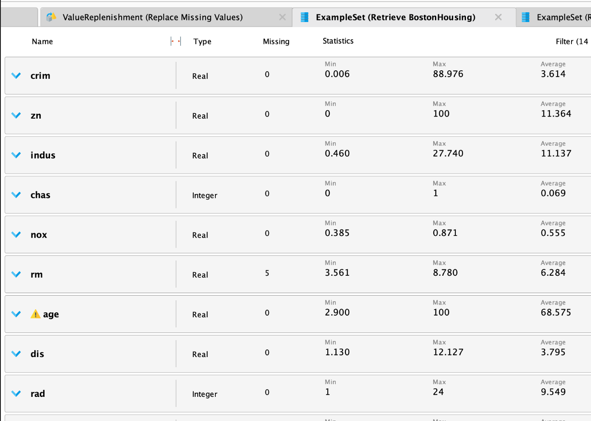Luego de utilizar el operador de "Replace Missing Values", ya no tendremos valores faltantes en la columna "RM", remplazando los valores con la media adecuada.
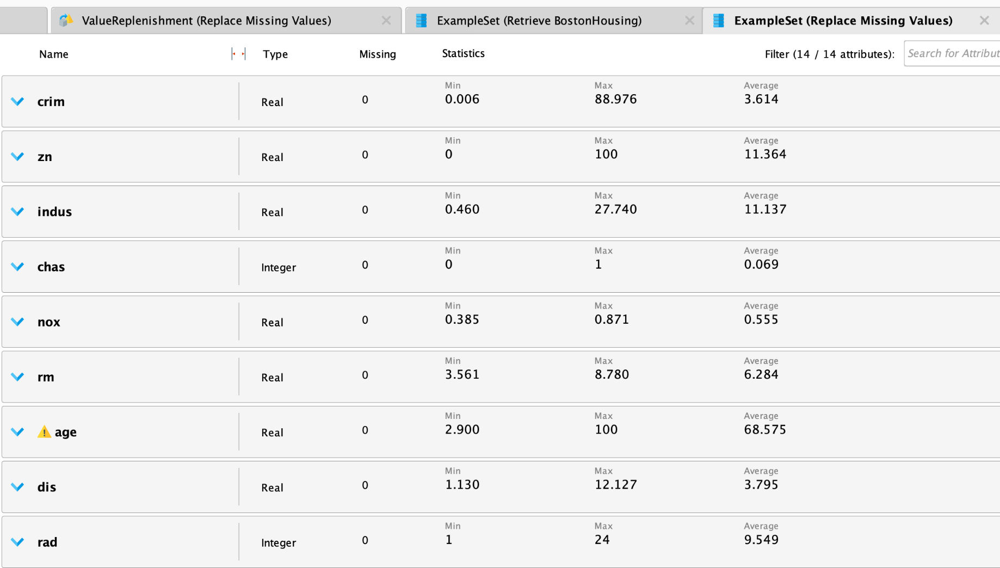¿Porqué remplazar los valores faltantes con la media?
Reemplazar los valores faltantes por la media supone que los datos están distribuidos de forma normal (gaussiana). Por ende, sería una buena representación de los datos utilizar la media como valor central.
Por otro lado, si los valores de la columna "RM" representan una distribución asimétrica (por ejemplo, cesgo a la izquierda o derecha) la media no sería el valor mas adecuado, en ese caso se debería de utilizar la mediana.
Análisis de distribución
En este caso podemos ver la distribución de la columna "RM":
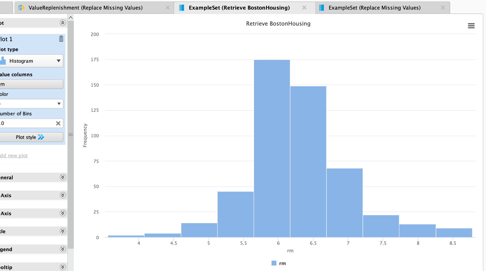¿Qué debemos buscar en la distribución?
Debemos buscar si el histograma tiene una curva simetrica o asimetrica, para tomar la decisión correspondiente.
En este caso, podemos ver que la curva es simétrica. Por ende, la mejor manera de remplazar los valores faltantes para este caso es utilizar la media.
Detect Outliers
El operador Detect Outliers en RapidMiner es una herramienta utilizada para identificar y tratar datos atípicos o outliers en un conjunto de datos. Los outliers son valores que se desvían significativamente de otras observaciones en el dataset y pueden ser el resultado de variaciones naturales en los datos, errores de medición, o problemas en el proceso de recolección de datos.
Métodos Comunes para Detectar Outliers:
- Desviación estándar: Este método utiliza la media y la desviación estándar para identificar valores que se encuentran a una distancia significativa de la media. Por ejemplo, un valor puede ser considerado un outlier si se encuentra a más de 2 o 3 desviaciones estándar de la media.
- Rango intercuartílico (IQR): Este enfoque implica calcular el rango intercuartílico (IQR) y luego determinar límites superior e inferior para los datos. Un valor se considera un outlier si se encuentra por debajo del límite inferior (Q1 - 1.5 * IQR) o por encima del límite superior (Q3 + 1.5 * IQR), donde Q1 y Q3 son los primer y tercer cuartiles, respectivamente.
- Análisis de densidad: Este método se basa en estimar la densidad de los datos en el espacio de características. Los puntos que se encuentran en áreas de baja densidad se consideran outliers.
Utilizamos el operador para detectar los outliers y analizarlos. El resultado se visualiza de la siguiente manera:
Normalize
El operador Normalize en RapidMiner es una herramienta utilizada para escalar o normalizar los valores de las variables en un conjunto de datos. La normalización es un paso crucial en el preprocesamiento de datos, especialmente cuando se trabaja con algoritmos de aprendizaje automático que son sensibles a la escala de los datos.
Para este caso, vamos a normalizar todos los valores, menos la media "MEDV"

Análisis con modelo de Machine Learning: Regresión Lineal
La regresión lineal es una técnica estadística y de aprendizaje automático utilizada para modelar la relación entre una variable dependiente (también conocida como variable objetivo) y una o más variables independientes (predictoras). En su forma más simple, la regresión lineal busca ajustar una línea recta (en el caso de una regresión lineal simple) a un conjunto de puntos en un gráfico.
Para más información sobre la regresión lineal, hay una investigación realizada con este tema.
Set role
El operador Set Role en RapidMiner permite modificar el papel (o "rol") de las columnas (atributos) dentro de un conjunto de datos. Los roles de los atributos definen cómo serán utilizados en el análisis o en la construcción de un modelo. Este operador es esencial cuando quieres asignar funciones específicas a tus atributos, como definir cuál es la variable objetivo o eliminar ciertos atributos del análisis. Nosotros lo utilizaremos para definir la variable objetivo
Shuffle
El operador Shuffle en RapidMiner se utiliza para mezclar aleatoriamente las filas de un conjunto de datos. Este operador es importante cuando se quiere eliminar cualquier tipo de sesgo o patrón que pueda existir en el orden de los datos y asegurar que los ejemplos estén distribuidos de manera aleatoria. Este proceso de "shuffle" es común en la preparación de datos, especialmente antes de dividir los datos en subconjuntos de entrenamiento y prueba, o al aplicar técnicas de validación cruzada (Cross Validation).
Filter Example Range
Este operador permite especificar un rango de filas que deseas conservar o eliminar del conjunto de datos. Las filas que se encuentren dentro del rango especificado se mantendrán (o se eliminarán, dependiendo de cómo configures el operador), y todas las demás filas serán descartadas del conjunto de datos resultante.
Lo utilizaremos para poder dividir el dataset en dos y utilizar un dataset de entrenamiento y otro de predicción
Primero dividimos los elementos ente la fila número 1 y la fila número 450
Validation
En RapidMiner, el operador Validation (validación) es utilizado para evaluar el rendimiento de un modelo de aprendizaje automático en un conjunto de datos distinto al de entrenamiento. A diferencia del Cross Validation (validación cruzada), el operador Validation divide el conjunto de datos en solo dos partes: una para entrenamiento y otra para prueba, y realiza una única evaluación.
Dentro del operador "Validation" podemos gestionar el "split" de nuestro entrenamiento de datos.
En nuestro operador de Validation, tendremos dos divisiones, uno con los datos de entrenamiento y otro con los datos de prueba, en donde utilizaremos el operador "Linear Regression" para entrenar el algoritmo, "Apply model" para aplicar el algoritmo de entrenamiento con el de prueba y "Performance" para analizar el performance de nuestro algoritmo
Resultados
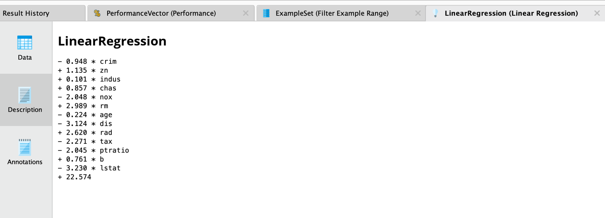Conclusiones
El modelo tiene un RMSE de 5.121, lo que representa un error promedio de aproximadamente el 10% del rango total de precios en MEDV. Esto indica que el modelo tiene un desempeño razonable, aunque no es perfecto.
Si bien el modelo predice lov valores promedios de cada casa, quizas hay que hacer algunos ajustes en el modelo o en los datos para mejorar el ídice de error cuadrático.
Importancia de las variables
Variables como RM (número de habitaciones) y LSTAT (nivel socioeconómico bajo) tienen un impacto significativo en MEDV.
Variables con coeficientes pequeños (como INDUS y AGE) podrían no ser tan relevantes y podrían eliminarse para simplificar el modelo.
Referencias
https://altair.com/altair-rapidminer-es
https://www.kaggle.com/datasets/arunjangir245/boston-housing-dataset?resource=download
https://docs.rapidminer.com/latest/studio/operators/